En el tema 10 vimos qué pasa con el potencial de membrana cuando entra corriente y la célula responde de forma pasiva. Este tema va de la respuesta activa: el potencial de acción. Tiene tres partes, y conviene tenerlas claras para no perderse:
Un potencial de acción es un cambio muy rápido del potencial de membrana. La membrana está más o menos a −60 mV, de repente se va a unos +30 mV, luego se hace muy negativa y vuelve al reposo, y todo eso pasa en más o menos un milisegundo. Es la señal con la que se comunican las neuronas y el músculo. El profesor lo resumió diciendo que es la razón por la que él habla y nosotros le escuchamos, por la que andamos o movemos los dedos.
No es igual en todas las células. En la diapositiva se comparan cuatro: en el axón de calamar y en el nodo de Ranvier de conejo dura unos pocos milisegundos, en el músculo esquelético de rana algo más, y en la aurícula de cobaya dura cientos de milisegundos. (Esta comparación viene en la diapositiva, en clase no la comentó.)
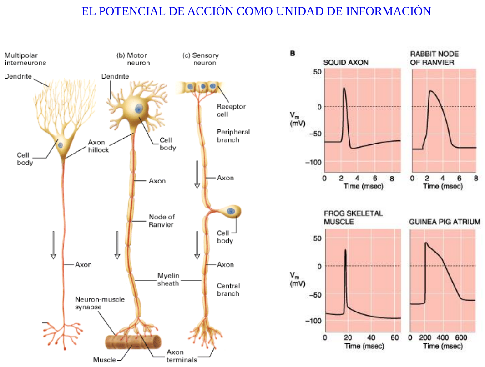
El primer potencial de acción registrado lo publicaron Hodgkin y Huxley en 1939, en el axón gigante del calamar. Usaron este axón porque mide hasta 1 mm de diámetro y se le puede meter un electrodo dentro sin problema. Más tarde, aprovechando la técnica de voltage clamp que había desarrollado Cole, consiguieron saber qué corrientes iónicas había detrás del potencial de acción y modelarlo.
En el registro el eje vertical va de −70 a +40 mV, y se ve el potencial de acción saliendo del reposo, pasando por encima de cero y volviendo por debajo del reposo. Las ondas de abajo son solo la marca de tiempo (500 Hz).
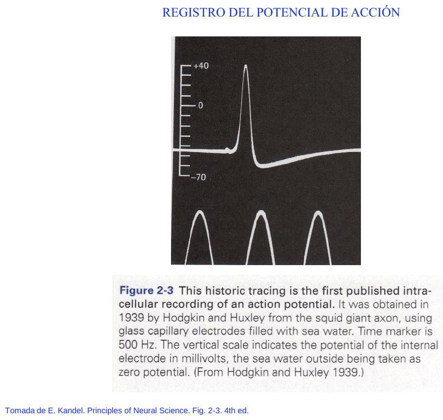
Partiendo del potencial de reposo, el profesor distinguió estas fases:
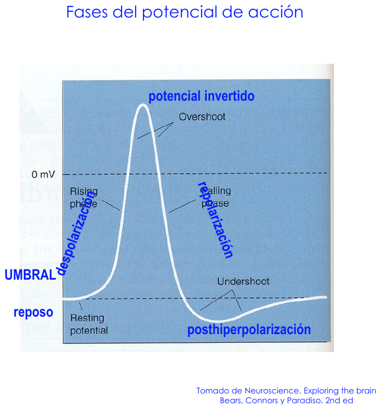
Uno de los primeros experimentos fue quitar sodio de fuera y ver qué le pasaba al potencial de acción. En la gráfica de arriba el registro 1 es el normal, el 2 es con solo el 33 % del sodio extracelular (todo lo demás igual) y el 3 es al volver a poner el sodio normal, para comprobar que se recupera. Abajo es lo mismo con el 50 %.
El profesor lo preguntó en clase y la respuesta fue que con menos sodio el potencial de acción es más pequeño y sube más despacio. Lo de que sea más lento dijo que se entendería más adelante. Lo interesante es por qué no llega tan arriba.
Un compañero respondió que, al acercarse al potencial de equilibrio del sodio, el sodio entra más despacio. El profesor dijo que estaba bien tirado, pero que la clave es otra: lo que hemos cambiado es el propio potencial de equilibrio del sodio. Si hay menos sodio fuera, el gradiente es menor y ENa es menos positivo. Cuando aumenta la permeabilidad al sodio la membrana se acerca a ENa, como dice Goldman, pero es que ese ENa ya no es tan positivo. Así que se acerca a un ENa nuevo, más bajo, y el pico es menor.
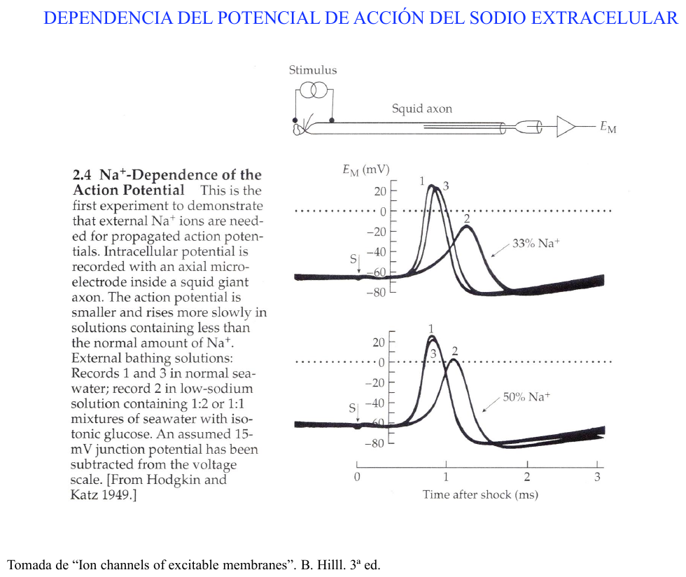
En clase, cuando alguien contestaba «se hace más negativo porque sale potasio», él preguntaba «¿otra forma de decirlo?». Lo que busca es el razonamiento con Goldman: aumenta la permeabilidad a un ion y por eso la membrana se acerca al potencial de equilibrio de ese ion. Conviene explicar todo el potencial de acción así.
El protagonista es el canal de sodio voltaje-dependiente. Tiene un poro hidrofílico, bordeado por los segmentos S5 y S6, por donde pasan los iones. Tiene además una compuerta de activación, una zona estrecha de la que forma parte el segmento S4, que tiene aminoácidos con carga. Cuando la membrana se despolariza, el S4 se mueve, el canal cambia de conformación y pasa de cerrado a abierto: es una compuerta de activación dependiente de voltaje.
Con el canal abierto entra sodio y la membrana se acerca al potencial de equilibrio del sodio, que suele estar en unos +60 mV. Nunca llega del todo, porque los canales de potasio de fuga siguen abiertos.
Pero cuando pasa típicamente un milisegundo, el lazo que hay entre los dominios III y IV, que es la compuerta de inactivación, encuentra un sitio que reconoce dentro del canal y lo tapona. Inactivar es tanto como bloquear: el canal sigue «abierto» pero ya no pasa sodio.
La figura lo cuenta en cinco pasos:
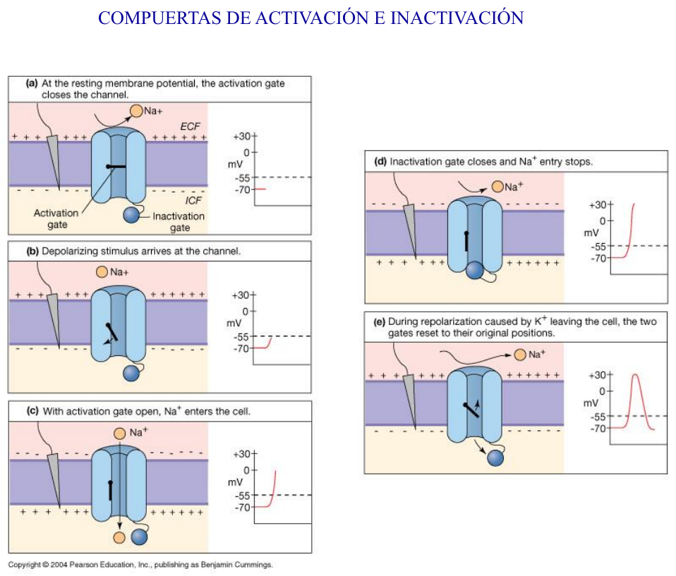
Si solo hubiera canales de sodio, al inactivarse el potencial bajaría y volvería al reposo gracias a los canales de potasio de fuga. Pero en el axón de calamar y en la mayoría de axones hay además canales de potasio voltaje-dependientes, que se diferencian de los de sodio en dos cosas:
En la figura, el canal de sodio pasa por cerrado (1), abierto con sodio entrando (2), inactivado con la bola puesta (3) y de nuevo cerrado (4). El de potasio solo tiene poro cerrado y poro abierto, con las cargas del sensor de voltaje moviéndose.
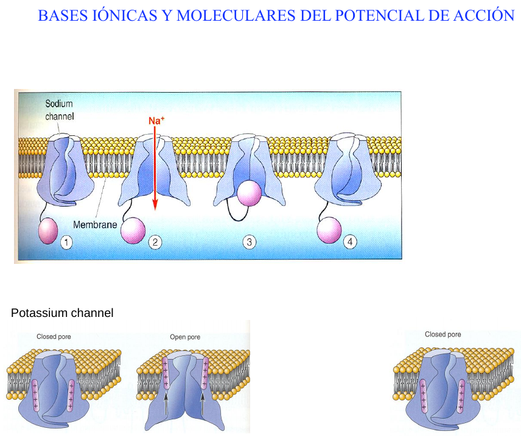
Juntando los dos canales, el profesor lo explicó así:
La gráfica de la izquierda lo muestra con las conductancias. La conductancia al sodio (amarilla) sube muy deprisa y cae enseguida, justo a la vez que la subida del potencial (negro). La conductancia al potasio (roja) empieza a subir más tarde, alcanza su máximo cuando el potencial ya está bajando y tarda mucho en desaparecer; por eso coincide con la poshiperpolarización. La figura de la derecha añade las corrientes y, abajo, el estado de las compuertas de activación e inactivación de cada canal en cada momento.
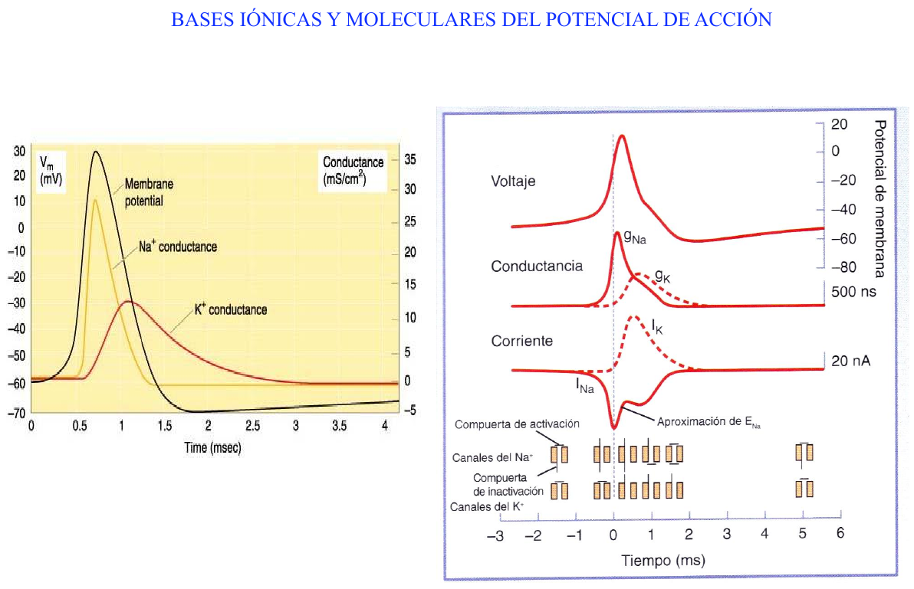
La idea del voltage clamp es ser capaces de mantener el voltaje fijo el tiempo que haga falta y medir la corriente que hace falta para mantenerlo. Se consigue con un amplificador de retroalimentación (feedback amplifier, FBA), que se llama así por el lazo que tiene. El secreto está en que el amplificador se encarga de que sus dos entradas estén siempre al mismo voltaje. Como la pipeta está llena de líquido conductor y en comunicación con la célula, el interior de la célula queda al voltaje que tú le pongas.
El profesor lo explicó con un pulso de −70 a −20 mV. A −20 se abren canales de sodio y entra sodio, de forma que la membrana tendería a despolarizarse por encima de −20. Pero el amplificador no lo deja: inyecta instantáneamente la misma corriente que está entrando por la membrana, pero de sentido contrario, para que siga en −20 durante todo el pulso. Midiendo lo que inyecta el amplificador sabemos exactamente lo que pasa por la membrana, con el signo cambiado.
Si el pulso no abre ningún canal voltaje-dependiente, por ejemplo de −70 a −60, no hay nada que contrarrestar (salvo las corrientes pasivas que se verán después).
En el axón de calamar Hodgkin y Huxley usaban dos electrodos: uno mide el potencial y el otro inyecta la corriente. Lo hacían así porque el axón genera mucha corriente, pero el principio es el mismo. En la figura se ven el electrodo de voltaje (E′), el de corriente (I′) y el amplificador FBA.
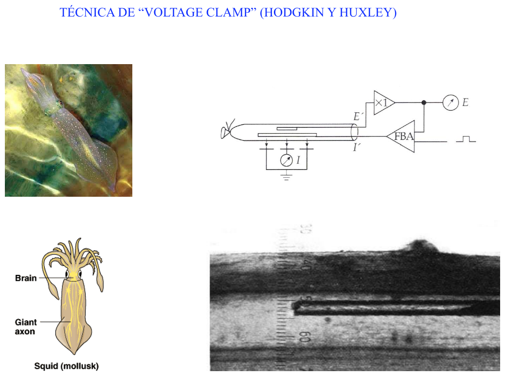
Una alumna preguntó si lo que se inyecta son electrones o iones. Por el cable van electrones. En el paso del electrodo al líquido el electrodo es de plata con cloruro de plata (Ag/AgCl), que según haga falta suelta o coge cloruro. Se usa el cloruro porque es el anión más abundante fuera de la célula, así que unos cuantos cloruros de más o de menos no cambian la concentración.
El profesor lo resumió así en el repaso: voltage clamp es tener un voltaje fijo el tiempo que haga falta, y patch clamp es eso mismo pero además con la membrana sellada. En el axón con el electrodo metido dentro también había algo de sello, pero de una resistencia muchísimo menor que la que se consigue cuando se unen el vidrio y la membrana.
La técnica la desarrollaron Neher y Sakmann, y la descubrieron un poco por casualidad. Estaban registrando corrientes en una célula muscular, presionando mucho con la pipeta, y la pipeta se les quedó pegada; vieron que así se registraba muchísimo mejor, con mucho menos ruido. Les pasó una vez, les pasó dos, y lo perfeccionaron: un poco de succión para limpiar, y como el vidrio tiene una afinidad enorme por la bicapa, se forma un sello de muy alta resistencia, de gigaohmios. Lo que queda dentro de la pipeta se registra muy bien.
En la diapositiva se ve el recorrido. Primero hay un sello de baja resistencia (50 MΩ); con la succión se consigue el sello de gigaohmios, y esa es la configuración cell-attached. A partir de ahí:
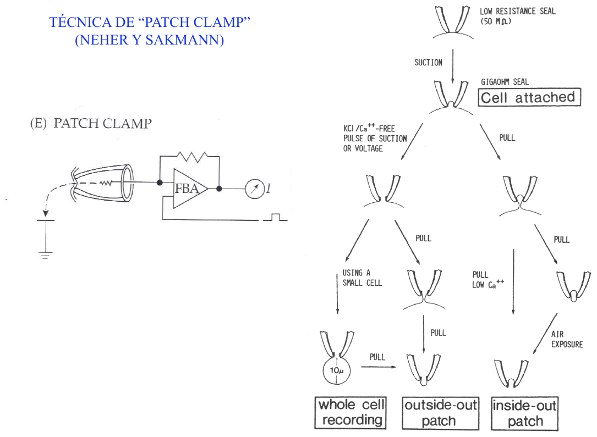
Inside-out y outside-out son registros de canal único. El profesor insistió en lo que eso significa: es la única forma de estudiar una sola proteína. En bioquímica se estudia una solución y se saca una media; aquí se ve cómo conmuta una única molécula en el tejido. Por eso a Neher y Sakmann les dieron el Premio Nobel.
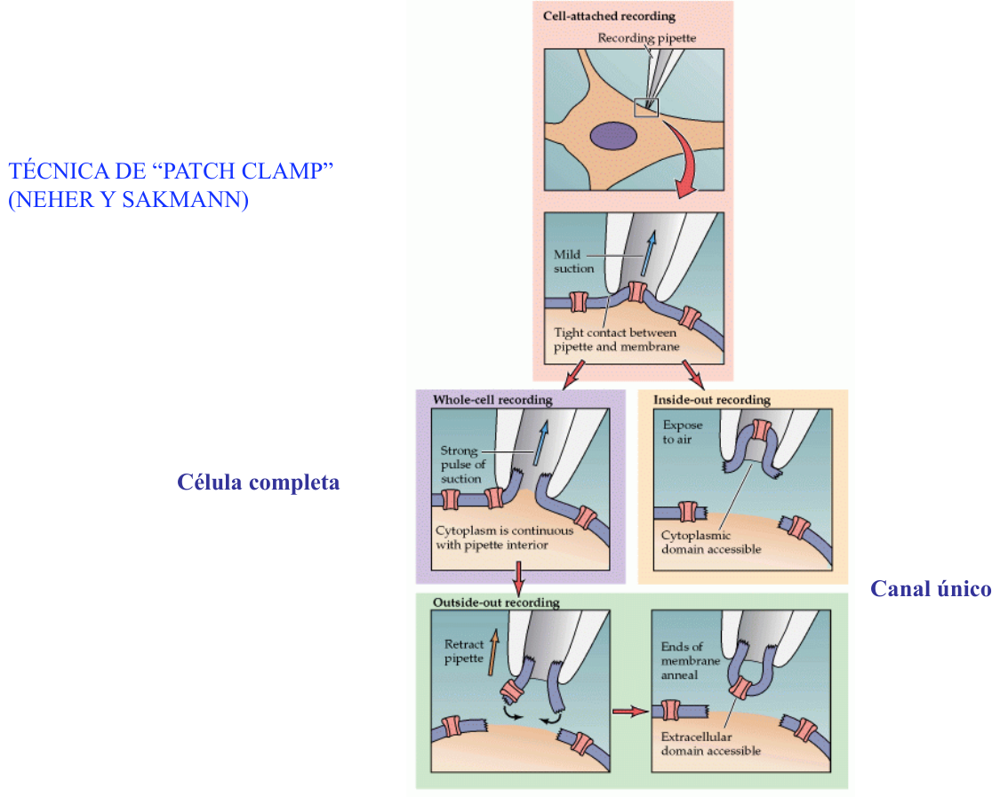
En el tema anterior se daban pulsos de corriente; ahora se dan pulsos de voltaje. Cada vez que se da un pulso aparecen dos corrientes pasivas que no se pueden evitar:
En la gráfica A el pulso es pequeño, de −60 a −50 mV, y no abre canales voltaje-dependientes: solo se ve el pico de Ic al principio, la Il pequeña y constante durante el pulso, y el pico de Ic hacia abajo al final. En la B el pulso es de −60 a 0 mV: primero el pico capacitivo, luego la fuga (línea discontinua), y además una corriente hacia dentro y después otra hacia fuera, que son las voltaje-dependientes.
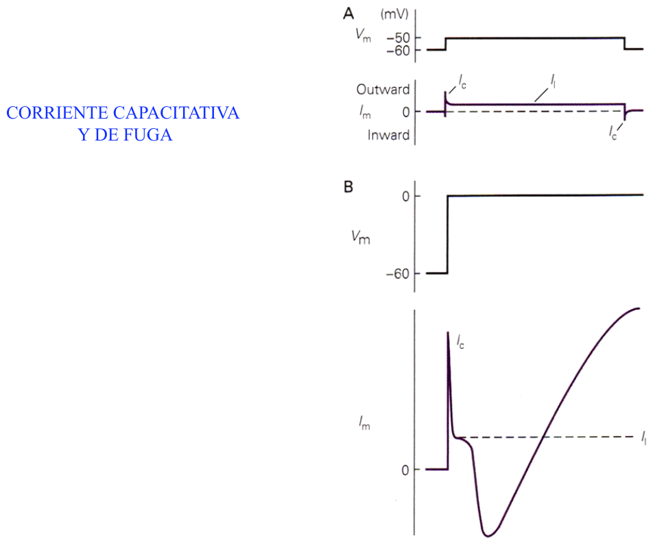
Cuando se estudian los canales voltaje-dependientes no interesan ni la capacitiva ni la de fuga (la capacitiva servirá más adelante para calcular la superficie de la célula, y la de fuga interesaría si se estudiaran los canales de fuga). Como son pasivas, son proporcionales al tamaño del pulso, y eso permite quitarlas:
En la práctica se suele dar un pulso cuatro veces más pequeño y en sentido contrario (de −60 a −75), multiplicarlo por 4 y sumarlo. El profesor insistió en que da igual cómo se haga: lo importante es generar un pulso sin respuesta voltaje-dependiente y escalarlo en el ordenador. En la diapositiva, a la izquierda está el registro bruto y a la derecha el limpio: una corriente hacia dentro seguida de otra hacia fuera, que es lo que se encontraban Hodgkin y Huxley y también Neher y Sakmann en whole-cell.
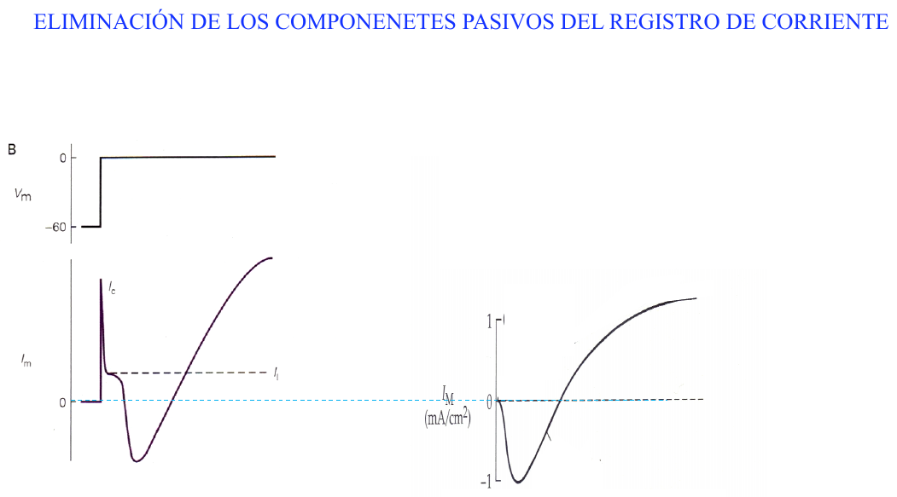
Ya limpia, la corriente tiene una parte hacia dentro y otra hacia fuera, pero no se sabe cuánto dura el sodio ni dónde empieza el potasio. El profesor explicó tres formas de separarlas.
1. Llevar el sodio a su potencial de equilibrio. Se baja el sodio de fuera al 10 %, de forma que su potencial de equilibrio pasa a ser unos −9 mV, y se da el pulso justo a −9 mV. Los canales de sodio se abren, pero como estamos en su potencial de equilibrio, el sodio ni entra ni sale. Lo que se registra es solo potasio. En la gráfica de la izquierda, la curva (A) es con el 100 % de sodio, la (B) con el 10 % (solo potasio), y la (C) es la resta A − B, que es la corriente de sodio.
2. Tetrodotoxina (TTX). Bloquea el canal de sodio: se abre pero no permea. Con TTX queda solo la corriente de potasio. Es la forma más común.
3. Tetraetilamonio (TEA). Bloquea el canal de potasio, así que queda solo la corriente de sodio, la que va hacia dentro. En la gráfica de la derecha se ven las dos: IK con TTX e INa con TEA, para un pulso de −60 a 0 mV.
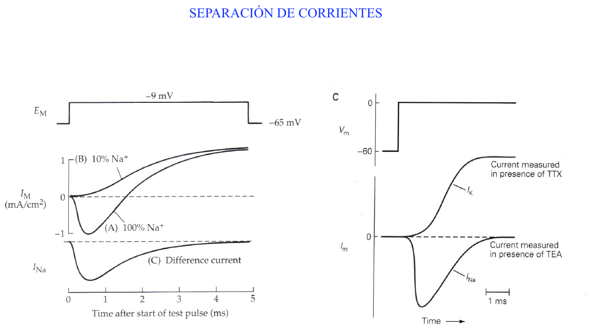
Claro, no se da un solo pulso sino muchos, cada vez mayores (de −80 a −70, a −60, a −50…), y así se obtienen familias de corrientes. En la figura, (A) y (C) son los controles, con las dos corrientes mezcladas. En (B), con TTX, solo quedan las corrientes de potasio hacia fuera, cada vez más grandes. En (D), con TEA, solo quedan las de sodio hacia dentro.
Con la familia de sodio el profesor hizo una pregunta: según los pulsos son más positivos, la corriente se hace más pequeña, y llega un momento en que va hacia fuera. ¿Por qué, si el potasio está bloqueado? Porque nos pasamos del potencial de equilibrio del sodio. Si ENa es +55 y el pulso va a +60 o a +80, los canales de sodio se abren, pero como estamos por encima de su potencial de equilibrio, el sodio sale.
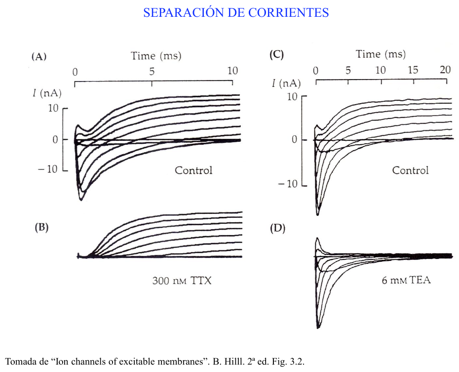
Si se representa la amplitud de cada corriente frente al voltaje del pulso se obtienen las curvas I/V. Las abscisas son el voltaje al que se ha llevado la membrana con cada pulso, siempre partiendo de un potencial bastante negativo que se llama potencial de mantenimiento (holding, EH en la gráfica). En el caso del potasio se mide la amplitud al final del pulso.
En clase una alumna preguntó por los puntos de la gráfica. El profesor explicó que, como querían saber muy bien a qué voltaje empezaba a abrirse cada canal, al principio daban pulsos de poca amplitud (de 5 en 5 mV) y luego, cuando ya estaba claro, más grandes. Y donde hay dos puntos es porque se dieron dos pulsos al mismo voltaje para comprobar que era estable.
Para entender la forma de las curvas el profesor partió de la fórmula de siempre, aplicada a cada ion:
La corriente es el producto de dos factores: la conductancia (cuántos canales hay abiertos) y la fuerza impulsora (Vm − E, lo lejos que está la membrana del potencial de equilibrio).
Potasio. En casi todos los canales voltaje-dependientes, según se despolariza aumenta la probabilidad de apertura, es decir, hay más canales abiertos y más conductancia. Por ejemplo, de −80 a −20 se abren algunos, y a +20 ya prácticamente todos; si a +20 ya se han abierto todos, a +30 no se abren más. La conductancia llega a un máximo. Pero el otro factor, Vm − EK, no para de crecer, porque EK (unos −80) está a la izquierda y nos alejamos de él. Por eso la corriente de potasio siempre aumenta: al principio con un poco de curva, mientras se van abriendo canales, y en cuanto se han abierto todos se convierte en una línea recta, porque ya solo depende de la diferencia de voltaje.
Sodio. Al principio pasa lo mismo: se abren más canales y entra más corriente, aquí hacia dentro. Hasta −60 o −50 casi no hay nada, a −45 aparece un poco y a −40 mucho más, porque la conductancia aumenta muy deprisa. Pero ENa está a la derecha, así que según despolarizamos nos acercamos a él y el factor Vm − ENa se hace cada vez más pequeño. El profesor puso números: si ENa es +45, a 0 mV la fuerza impulsora es 0 − 45 = −45, y a +10 ya es −35. A partir de más o menos −25 mV ya se han abierto bastantes canales y la conductancia crece menos de lo que disminuye la fuerza impulsora, así que la corriente empieza a disminuir. En ENa la fuerza impulsora es cero y la corriente es cero, aunque estén abiertos todos los canales. Y por encima, por ejemplo a +60 con ENa = +55, queda +60 − 55 = +5: la corriente se hace positiva y crece.
Así que el potasio aumenta siempre porque nos alejamos de su potencial de equilibrio, y el sodio no porque nos acercamos al suyo.
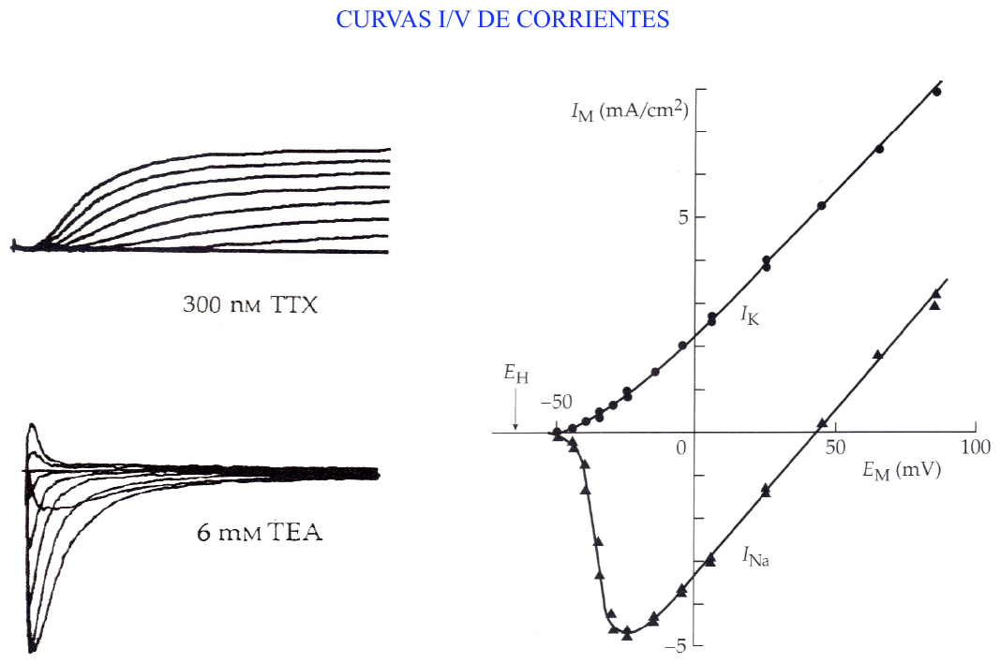
Si a +20 mV ya se han abierto todos los canales de potasio, ¿por qué a +40 hay más corriente? Porque la conductancia ya no sube, pero la diferencia de potencial Vm − EK sí. El profesor también avisó de que en la pregunta del examen lo importante es la familia de corrientes, y de que los pulsos hay que dibujarlos bien.
Despejando de la fórmula se obtienen las conductancias:
En la gráfica se dan pulsos desde −60 mV a −40, −20, 0 y +20 mV. La gK sube con forma de S, despacio, y se mantiene mientras dura el pulso, porque no se inactiva; cuando acaba el pulso, baja. La gNa sube muy deprisa y luego cae aunque el pulso siga, porque se inactiva. En las dos, cuanto más despolarizante es el pulso, mayor es la conductancia.
Aquí está la trampa: entre 0 y +20 mV la corriente de sodio es más pequeña, pero la conductancia ha seguido aumentando. La corriente es menor solo porque la fuerza impulsora ha disminuido todavía más. A +20 casi se ha conseguido todo: tanto en un canal como en otro, a +40 pasaría casi lo mismo, porque ya no quedan canales por abrirse.
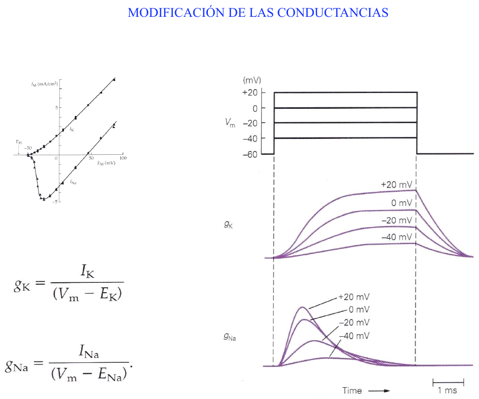
El segmento S4 tiene aminoácidos con carga, y cuando se despolariza se mueven hacia arriba. Ese movimiento de carga genera una corriente, la corriente de compuerta (gating current). No es una corriente a través de la membrana, sino dentro de la propia membrana, pero se puede registrar si se amplifica mucho y se bloquea todo lo demás. En un registro normal también aparece, pero parece un artefacto. En la figura se ve que es diminuta: la Ig se mide en µA/cm² y la corriente de sodio en mA/cm².
Es una prueba más de que el sensor de voltaje se mueve de verdad, y sirve para estudiar los canales. Si no aparece corriente de compuerta, la compuerta está bloqueada y no se puede mover. Si aparece corriente de compuerta pero no hay corriente iónica, la compuerta se mueve y el problema es otro.
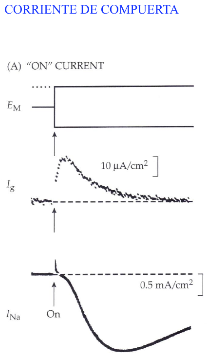
El umbral es el voltaje al que hay que llevar la membrana para que se genere un potencial de acción; en el repaso corrigió que basta con llegar a ese valor, no hace falta superarlo. Para ser finos, es el potencial al que el 50 % de las veces se genera un potencial de acción, porque justo en el umbral no siempre se dispara. La pregunta que hizo el profesor fue: si el umbral es que se abran los canales de sodio, ¿basta con que se abra uno? No: tienen que abrirse «muchos». La cuestión es cuántos.
Para explicarlo partió de las corrientes de fuga, que no son voltaje-dependientes: la de potasio hacia fuera y la de sodio hacia dentro. En reposo, por ejemplo a −60 mV, el potencial está estable porque la corriente de potasio hacia fuera es igual a la de sodio hacia dentro. No es que no haya flujo, que lo hay, sino que los dos son iguales.
Esto es lo que muestra la gráfica de flujos. En el eje horizontal está el potencial de membrana; hacia arriba es salida (efflux) y hacia abajo entrada (influx). El flujo de potasio cruza el cero en su potencial de equilibrio, −75 mV, y el de sodio en el suyo, +55 mV. La línea gruesa es la suma de los dos, el flujo neto, y cruza el cero en −60 mV: ese es el potencial de reposo, el sitio donde lo que sale y lo que entra se compensan.
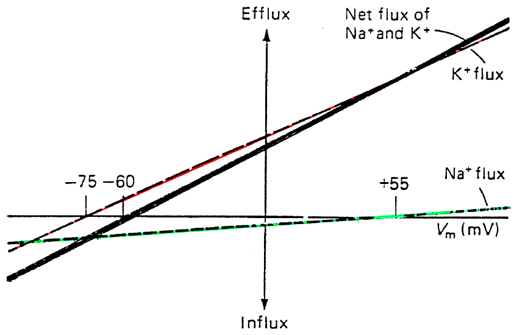
Entonces el profesor fue llevando la membrana a distintos voltajes:
Y aquí está la clave: al despolarizarse se abren más canales de sodio. Si antes había abiertos, por decir algo, un 20 %, al irse a −40 mV a lo mejor ya hay un 30 %, así que entra aún más corriente y se va aún más a la derecha. A partir de ese momento lo único que puede pasar es que se abran todos los canales de sodio: se ha generado un potencial de acción.
Un compañero preguntó por qué, si la flecha del potasio seguía siendo más grande que la de sodio, se despolarizaba. La respuesta es que hay que sumar dos flechas de sodio: los canales de fuga, que según el profesor «se compraron la casa, no están de alquiler», más los voltaje-dependientes que se acaban de abrir justo por llegar a −45 mV.
En una célula no excitable, cada vez que algo la despolariza (corriente por un canal dependiente de ligando, o corriente inyectada), en cuanto deja de entrar esa corriente vuelve al reposo. Lo que cambia en una célula excitable es que tiene canales voltaje-dependientes que despolarizan (de sodio o de calcio), y eso permite el disparo.
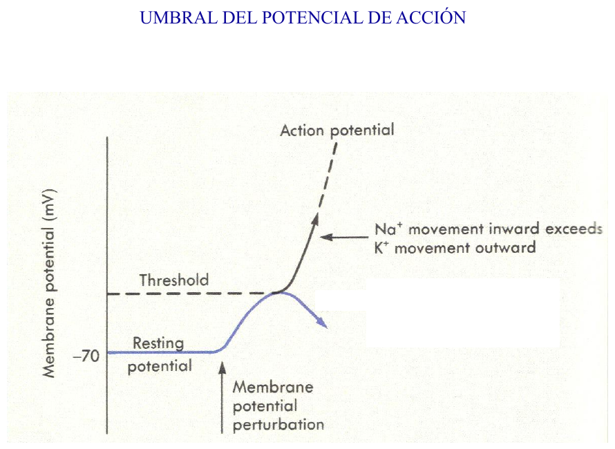
El umbral es el punto en el que el movimiento de sodio hacia dentro supera al movimiento de potasio hacia fuera. En cuanto ocurre eso, lo único que puede pasar es un potencial de acción. El profesor avisó: «como esto os lo voy a preguntar en el examen, voy a ir lento».
En la gráfica de la derecha de la siguiente diapositiva se ven cuatro pulsos de corriente. El a es negativo e hiperpolariza. El b y el c despolarizan algo, pero se quedan por debajo del umbral: son respuestas locales, pasivas, que vuelven al reposo cuando acaba el pulso. El d llega al umbral y se dispara el potencial de acción.
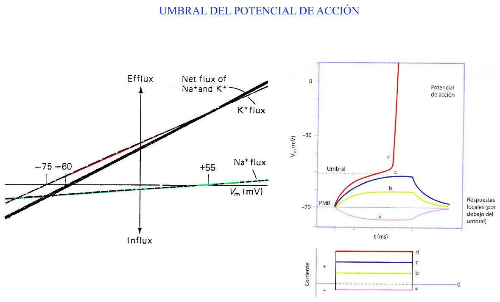
Un compañero preguntó por qué la despolarización se para justo en +30 mV. Lo primero que aclaró el profesor es que +30 no es ningún número mágico: lo puso porque venía en la figura, pero el pico puede estar en +25 o en +35.
Lo que pasa en el pico es que se han abierto prácticamente todos los canales de sodio. Como la compuerta de activación es mucho más rápida que la de inactivación, a todos les da tiempo a abrirse antes de que empiecen a inactivarse. En ese momento la permeabilidad al sodio es la de todos los voltaje-dependientes más los de fuga, pero los canales de potasio de fuga siguen abiertos (y alguno de potasio voltaje-dependiente, aunque muy pocos). Según Goldman, con esas permeabilidades el potencial llega a un valor intermedio entre EK y ENa, y ese valor es más o menos +30. Es lo mismo que se hizo en clase al cambiar las permeabilidades en la ecuación de Goldman y pasar de −55 a +32 mV.
Al día siguiente el profesor volvió a preguntarlo, y avisó de que le interesa mucho (es decir, que entra en el examen). No vale con decir «porque se inactivan los canales de sodio», porque eso explica por qué baja, no por qué el pico está justo ahí. Tampoco vale con decir «porque está cerca de ENa», porque +20 o +40 también lo están. La respuesta buena fue la de un compañero: por la ecuación de Goldman. En el pico casi no se han abierto todavía los canales de potasio voltaje-dependientes, pero los canales de potasio de fuga están siempre abiertos. Con una permeabilidad al sodio muy alta, pero sin que la del potasio sea despreciable, la membrana se acerca a ENa sin llegar a él, porque la proporción de permeabilidades no es «100 contra 1». Quedándonos solo con el sodio y el potasio, Goldman se reduce a:
Si PNa se hace enorme, los sumandos del potasio se vuelven despreciables, la ecuación se queda en [Na+]e/[Na+]i y Vm se acerca a ENa. Si la que domina es PK, se acerca a EK. Y si las dos pesan, el potencial queda entre EK y ENa. El pico del potencial de acción es justo eso. En el ejercicio de clase se llegaba a unos +53 mV, que el profesor reconoció que es una exageración, poniendo una permeabilidad al sodio mucho mayor que la del cloruro y la del potasio. (Es la ecuación de Goldman del tema 6 quitando el cloruro, que es como la escribió en la pizarra.)
Una alumna preguntó esto en clase. Los canales de fuga están siempre abiertos, les da igual el voltaje. Son fundamentalmente de potasio, aunque también hay algunos de sodio y algo de cloruro (en algunas células, bastantes de cloruro). Los voltaje-dependientes, tanto de sodio como de potasio, se abren cuando se despolariza la membrana. Lo que pasa es que quien despolariza es el sodio, así que hace falta que el sodio haya despolarizado para que se abran los de potasio. Y además, aunque notaran la despolarización a la vez, los de potasio se abrirían más tarde porque su cinética es más lenta.
Y después los canales de sodio se inactivan, porque están diseñados para eso, dejan de conducir y la membrana vuelve al reposo.
El profesor añadió un detalle: si en vez de un pulso brusco se despolariza muy lentamente (de −80 a −75, a −70…), se pueden llegar a inactivar los canales incluso antes de conseguir abrirlos.
El potencial de acción es una respuesta autorregenerativa: llega un momento en que se abren suficientes canales de sodio como para producir una despolarización que abre más canales, que despolarizan más, y así hasta que se abren todos. Es el ciclo de la diapositiva: estímulo, despolarización, apertura de canales de sodio, entrada de sodio, más despolarización.
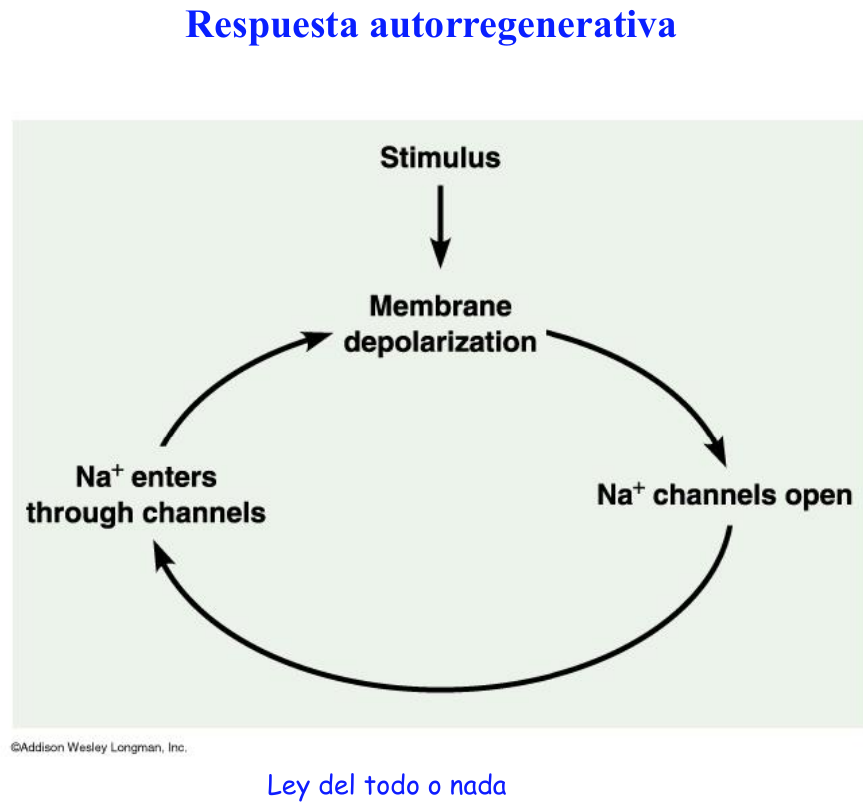
Y precisamente porque al final se abren todos, se cumple la ley del todo o nada: o se produce o no se produce, y cuando se produce tiene siempre la misma amplitud. Es justo lo contrario de los potenciales locales, que son graduados: con un estímulo sináptico se puede despolarizar 5, 10, 15 o 20 mV. En la figura, los estímulos pequeños dan respuestas locales cada vez mayores; a partir del estímulo umbral aparece el potencial de acción, y aunque los estímulos sigan creciendo, todos los potenciales de acción tienen la misma amplitud.
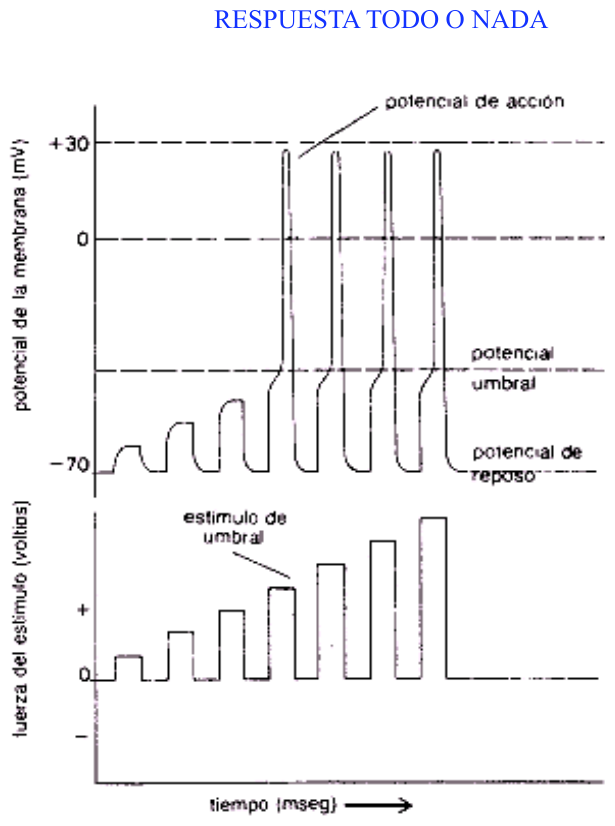
El profesor lo preguntó en clase. Una respuesta fue poner TTX. Si había 100 canales y una concentración muy pequeña de TTX bloquea el 10 %, quedan 90: la permeabilidad al sodio es el 90 % de la que había, así que según Goldman la membrana no puede acercarse tanto a ENa (+55) y el pico es menor. La otra respuesta, que algunos canales sigan inactivados, lleva al período refractario.
Después de un potencial de acción hay dos períodos refractarios:
En clase salieron tres razones por las que en el período relativo hace falta más estímulo:
Para la tercera razón el profesor puso un ejemplo con números. Hay 100 canales de sodio, y en condiciones normales a −45 mV se abre el 10 %, es decir, 10 canales, que es justo lo que hace falta para llegar al umbral. Si ahora el 50 % está inactivado, solo quedan 50 disponibles, y a −45 mV se abren 5: no se llega al umbral. Pero si se despolariza hasta −20 mV, a lo mejor se abre el 50 % de los disponibles, que son 25, más que los 10 que hacían falta. Aunque haya menos canales, la proporción que se abre aumenta: se puede disparar, pero dando una despolarización mayor.
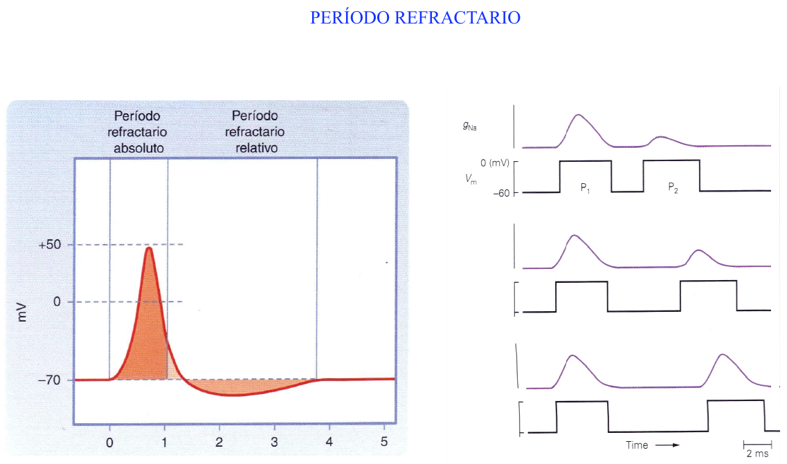
La gráfica de la derecha lo demuestra midiendo la conductancia al sodio con dos pulsos seguidos (P1 y P2), de −60 a 0 mV, cada vez más separados. Si P2 llega muy pronto, la gNa que produce es muy pequeña porque los canales siguen inactivados. Cuanto más se separan los pulsos, más se recupera, hasta que, cuando ya se han desinactivado todos los canales, P2 da la misma gNa que P1.
En clase se discutió si el potencial de acción del período relativo tiene la misma amplitud que el primero. La respuesta de una compañera, que el profesor celebró, fue que es menor, porque todavía hay canales de sodio inactivados.
Un compañero planteó que con un estímulo más fuerte quizá sí se llegaría a la misma amplitud. El profesor razonó que no, por dos motivos. Si la mitad de los canales de sodio no están disponibles, cuando se abran todos los que quedan la permeabilidad al sodio será menor que antes, y según Goldman la membrana no puede acercarse tanto a ENa. Y además hay una permeabilidad al potasio aumentada, la de los voltaje-dependientes que siguen abiertos. Con menos permeabilidad al sodio y más al potasio, el pico no puede llegar al mismo valor por mucha intensidad que se meta. Da igual de dónde se parta: el pico lo fija Goldman.
Un detalle sobre la figura: el profesor dijo que el +50 mV del pico es una exageración. Para llegar ahí ENa tendría que estar en unos +70, y como el pico es un valor intermedio según Goldman, nunca llega al potencial de equilibrio del sodio.
Para cerrar el tema el profesor comparó dos cosas. Si se inyecta un pulso de corriente en un punto, el potencial que se registra cada vez más lejos es cada vez menor, porque se disipa según la constante de longitud λ (tema 10). En cambio, el potencial de acción no disminuye al propagarse, sino que mantiene su amplitud. La razón, que dio un compañero, es que en cada punto se abren los mismos canales de sodio: la membrana es homogénea y el potencial de acción se regenera igual en todas partes.
Al final de esa clase el profesor dejó una pregunta en el aire: ¿qué tendría que ocurrir para que el potencial de acción, al propagarse, no tuviera la misma amplitud? La resolvió al día siguiente, y avisó de cómo puede caer en el examen: «la amplitud del potencial de acción ha disminuido porque…», con opciones del tipo «ha aumentado la densidad de canales de sodio», «ha aumentado la densidad de canales de potasio»… Si se ha entendido, sale solo.
La clave es que el pico del potencial de acción es un valor intermedio entre EK y ENa, fijado por Goldman según las permeabilidades. El profesor lo dibujó como una línea con ENa (por ejemplo +55 mV) arriba y EK (por ejemplo −70 mV) abajo, con el pico en medio. Todo lo que mueva alguno de los dos extremos, o cambie el peso de cada permeabilidad, cambia la amplitud:
También salieron en clase otras respuestas que el profesor comentó aparte:
Como normalmente, al propagarse el potencial de acción, no cambian ni las concentraciones de sodio y potasio (dentro y fuera) ni la densidad de canales de sodio voltaje-dependientes ni la de potasio de fuga, la amplitud no cambia. Ya no es «me lo creo porque lo dicen los libros»: se sabe qué tendría que cambiar para que cambiara, y como eso no ocurre, no cambia.